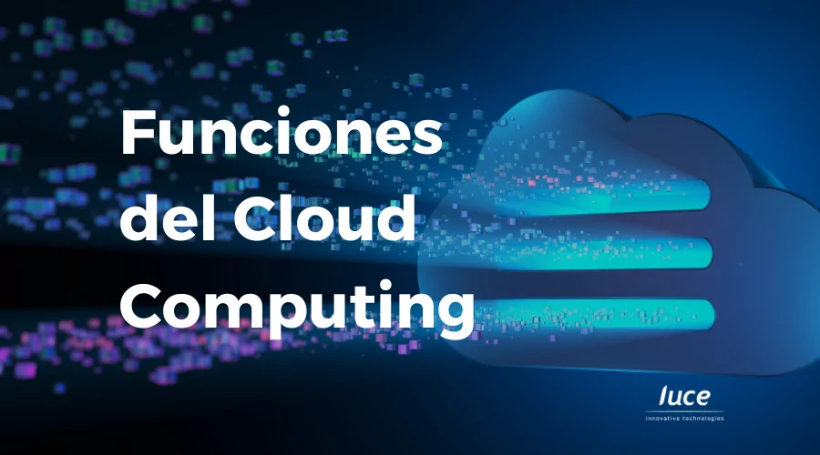
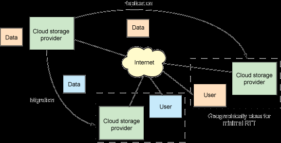
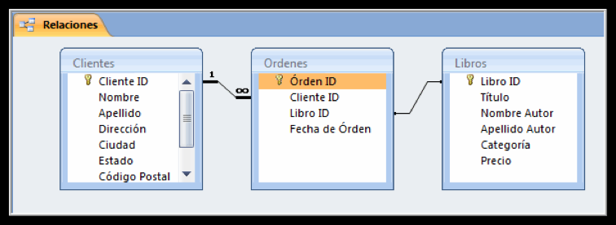
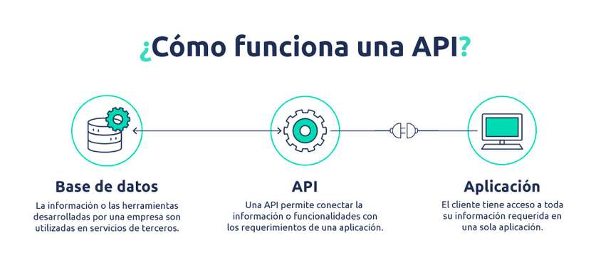
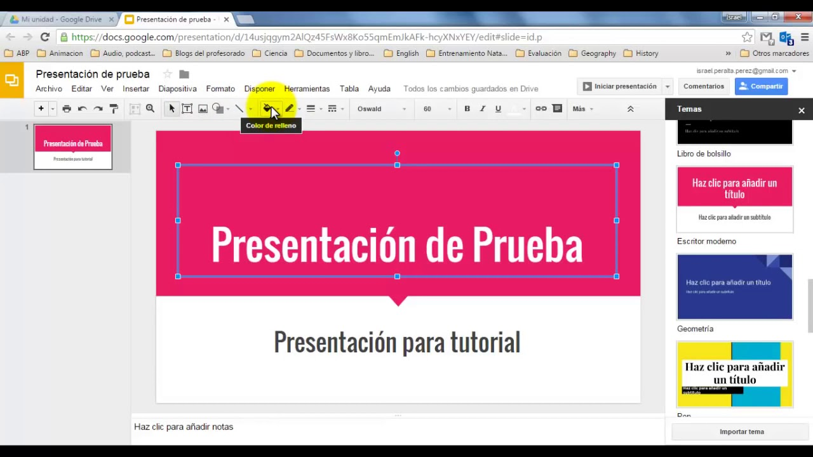

1️⃣-
Sesión 2 —Funciones de la nube
en un sistema conectado
Objetivo: identificar y describir las funciones principales de la nube en escenarios reales. Criterio: b)
Introducción
La nube permite que empresas y usuarios ejecuten aplicaciones, procesen datos e intercambien información sin depender de equipos físicos propios. Gracias al procesamiento en cloud , los recursos de cómputo (CPU, memoria, almacenamiento) se asignan de forma flexible y bajo demanda, adaptándose automáticamente a la carga real de trabajo. Esto hace posible ejecutar desde pequeñas aplicaciones hasta sistemas complejos de forma eficiente, escalable y con pago por uso, que es una de las grandes ventajas del modelo cloud frente a la informática tradicional.

1️⃣ Procesamiento
cómputo: ejecutar servicios y cargas
- Procesamiento / cómputo es la capacidad de ejecutar trabajo en la nube: instrucciones de un programa, cálculos, lógica de negocio, tareas automáticas, etc.
- Ese “trabajo” se ejecuta sobre recursos de computación (CPU, RAM y, a veces, GPU) que el proveedor te asigna bajo demanda.
- En cloud, el cómputo se organiza como servicios que “corren” cargas de trabajo (workloads) .
Qué es una carga (workload) Una carga es cualquier cosa que “consume CPU/RAM” para hacer un trabajo:
- una web (backend) atendiendo peticiones,
- un script que procesa ficheros,
- un servicio que transforma datos,
- un motor que ejecuta reglas,
- un proceso que renderiza vídeo,
- una tarea programada (cada noche),
- un entrenamiento/inferencia de IA (si hay GPU).
1.1) ¿Qué “ejecuta” el cómputo en la nube?
A) Aplicaciones (apps)
- Una API (por ejemplo, una app de inventario).
- Un servidor web (Nginx/Apache) + tu código (PHP, Node, Java…).
- Un panel de administración interno.
Ejemplo : una tienda online que recibe 2.000 visitas en rebajas → necesitas más CPU/RAM para atender más peticiones.
B) Servicios (servicios del sistema)
- Un servidor de correo , un servidor de autenticación , un proxy .
- Un worker que se encarga de colas (jobs).
Ejemplo : un “worker” que envía emails de confirmación y genera facturas PDF.
C) Tareas por lotes (batch)
- Trabajos que corren “de vez en cuando” y consumen recursos durante un rato.
Ejemplo : cada noche se recalculan estadísticas y se genera un informe.
1.2) Formas típicas de “procesamiento” en cloud (modelos de ejecución)
1) Máquinas virtuales (VMs) : “me dan una máquina”
- Ejecutas lo que quieras (SO + programas).
- Útil si necesitas control total.
Ejemplos
- VM con Ubuntu + Docker para desplegar una API.
- VM Windows para un software legado.
2) Contenedores : “me dan un entorno de ejecución empaquetado”
- Ejecutas imágenes (Docker) con tu app y dependencias.
- Muy común en despliegues modernos.
Ejemplos
- Contenedor con un backend Node + otro con una base de datos (aunque esta última suele ser mejor gestionada).
- Contenedor “worker” que procesa colas.
3) Serverless / funciones : “ejecuto código cuando ocurre algo”
- No gestionas servidores; se ejecuta bajo eventos (HTTP, subida de archivo, mensaje…).
Ejemplos
- Cuando un usuario sube una foto → función que la redimensiona.
- Cuando entra un pedido → función que valida y lanza un proceso.
1.3) Propiedades
clave del procesamiento en la nube
Elasticidad
El cómputo puede subir/bajar automáticamente según demanda.
Ejemplo : si pasan de 50 a 500 peticiones/segundo, se crean más instancias del servicio.
Pago por uso
Pagas por tiempo de ejecución , capacidad asignada , o número de invocaciones (según el modelo).
Ejemplo : un batch que corre 10 minutos al día cuesta mucho menos que un servidor 24/7.
Aislamiento
Cada carga corre aislada (VM/contendor/función) para evitar interferencias.
Ejemplo : un fallo en un servicio no debería tumbar el resto si está bien diseñado.
1.4) Ejemplos concretos
- Procesamiento de datos (ETL simple)
- Subo un CSV a la nube → un proceso lo limpia y lo guarda en formato correcto.
- Ejecución de una aplicación web
- Frontend estático + backend en un servicio de cómputo que atiende peticiones.
- Generación de PDFs
- Cada vez que se emite una factura → una tarea genera el PDF.
- Renderizado / conversión
- Subo un vídeo → proceso que lo convierte a diferentes calidades.
- Automatización programada
- A las 02:00 → se ejecuta un job que hace copia y manda un informe.
2️⃣- Almacenamiento: ficheros, copias y bases de datos
Concepto base
El almacenamiento en la nube es la función que permite guardar, organizar, proteger y recuperar información sin depender de discos locales. Los datos se alojan en infraestructuras distribuidas del proveedor, accesibles a través de red, con alta disponibilidad , replicación y escalabilidad automática. El usuario no gestiona el hardware físico; define qué guarda , cómo se accede y qué nivel de protección necesita.

2.1) Almacenamiento de ficheros
- Pensado para documentos, imágenes, vídeos, logs, copias de trabajo , etc.
- Acceso por URL, API o sincronización con equipos.
- Permite compartición , control de permisos y versiones.
Ejemplos
- Carpeta cloud para trabajos del alumnado.
- Repositorio de imágenes de una web.
- Almacenamiento de logs de una aplicación.
Claves
- Escala sin límite práctico.
- Acceso concurrente por muchos usuarios/servicios.
- Ideal para datos no estructurados .
2.2) Copias de seguridad (backups)
- Uso del almacenamiento para proteger datos frente a borrados, fallos o ataques.
- Copias programadas , versionadas y, a menudo, geográficamente replicadas .
- Posibilidad de restauración puntual (a una fecha/hora concreta).
Ejemplos
- Copia diaria de la base de datos de una aplicación.
- Backup automático de una máquina virtual.
- Historial de versiones de documentos.
Claves
- Separación entre dato original y copia .
- Automatización (sin intervención manual).
- Fundamental para continuidad del servicio .
2.3) Bases de datos en la nube
- Almacenamiento estructurado (tablas, registros, relaciones).
- El proveedor gestiona motor, parches, copias y alta disponibilidad (en servicios gestionados).
- Acceso desde aplicaciones mediante credenciales.
Tipos habituales
- Relacionales (SQL): datos consistentes, transacciones.
- No relacionales (NoSQL): gran volumen, flexibilidad, velocidad.
Ejemplos
- Base de datos de clientes y pedidos.
- Registro de usuarios y credenciales.
- Almacenamiento de eventos y métricas.

3️⃣- Intercambio de información : sincronización, APIs, mensajería
El intercambio de información en la nube es la función que permite que aplicaciones, servicios y usuarios se comuniquen entre sí , compartiendo datos de forma segura, rápida y controlada , aunque estén en dispositivos o ubicaciones distintas. En cloud, esta comunicación se apoya en servicios gestionados que facilitan la sincronización , el uso de APIs y la mensajería , evitando dependencias directas entre sistemas.
3.1) Sincronización
- Mantiene la misma información actualizada en varios dispositivos o servicios.
- Los cambios se replican automáticamente .
- Puede ser bidireccional (todos actualizan) o unidireccional .
Ejemplos
- Un documento editado en casa aparece actualizado en el instituto.
- Fotos del móvil que se sincronizan con la nube.
- Configuraciones de una app replicadas en varios servidores.
3.2) APIs (Interfaces de Programación de Aplicaciones)
- Permiten que una aplicación consuma datos o servicios de otra mediante peticiones.
- Funcionan como contratos : qué se puede pedir y qué se devuelve.
- Normalmente usan HTTP/HTTPS y formatos como JSON.
Ejemplos
- Una app consulta una API para obtener datos de clientes.
- Un frontend web accede al backend mediante API.
- Integración con servicios externos (mapas, pagos, meteorología)

3.3) Mensajería
- Comunicación asíncrona entre servicios mediante mensajes.
- El emisor no espera respuesta inmediata.
- Se usan colas o sistemas de publicación/suscripción.
Ejemplos
- Una aplicación envía un mensaje “pedido creado”.
- Un servicio lo procesa más tarde (facturación, email).
- Registro de eventos y notificaciones.
4️⃣- Ejecución de aplicaciones : servicios web, apps corporativas.
La ejecución de aplicaciones en la nube consiste en poner en funcionamiento software directamente sobre infraestructuras cloud , permitiendo a los usuarios acceder y utilizar aplicaciones sin necesidad de instalarlas localmente o mantener servidores propios.
- Estas aplicaciones se ejecutan en centros de datos del proveedor y se consumen normalmente a través de navegador web o clientes ligeros , garantizando disponibilidad continua y actualización centralizada.
4.1 Servicios web
- Aplicaciones accesibles mediante navegador .
- El usuario solo interactúa con la interfaz; la lógica y los datos están en la nube.
- No requieren instalación ni mantenimiento local.
Ejemplos
- Correo electrónico corporativo.
- Gestores de contenidos.
- Plataformas educativas online.
- Aplicaciones de facturación web.
BUSCA MÁS EJEMPLOS
4.2) Aplicaciones corporativas (apps empresariales)
- Software orientado a la gestión interna de una organización .
- Centralizan información y procesos.
- Acceso controlado por roles y permisos.
Ejemplos
- ERP (gestión de ventas, compras, almacén).
- CRM (gestión de clientes).
- Herramientas de recursos humanos.
- Sistemas de gestión documental.
4.3) Ventajas de ejecutar aplicaciones en la nube
- Disponibilidad : accesibles 24/7.
- Escalabilidad : soportan más usuarios sin reinstalar nada.
- Seguridad centralizada : control de accesos y copias.
- Actualización continua : el proveedor mantiene el software.
💻 Presentación de Google
Crea una presentación en PRESENTACIONES DE GOOGLE e incrústala en tu portfolio, debéis indagar más información de la que aparece aquí completando con enlaces, imágenes, artículos, empresas, vídeos...
- Recuerda organizar bien dentro de tu carpeta DRIVE
- No se puede usar POWERPOINT/ LIBREOFFICE

💻 Moodle & Portfolio
- Sube el enlace actualizado tu portfolio a Moodle y, sube también la presentación en archivo PDF